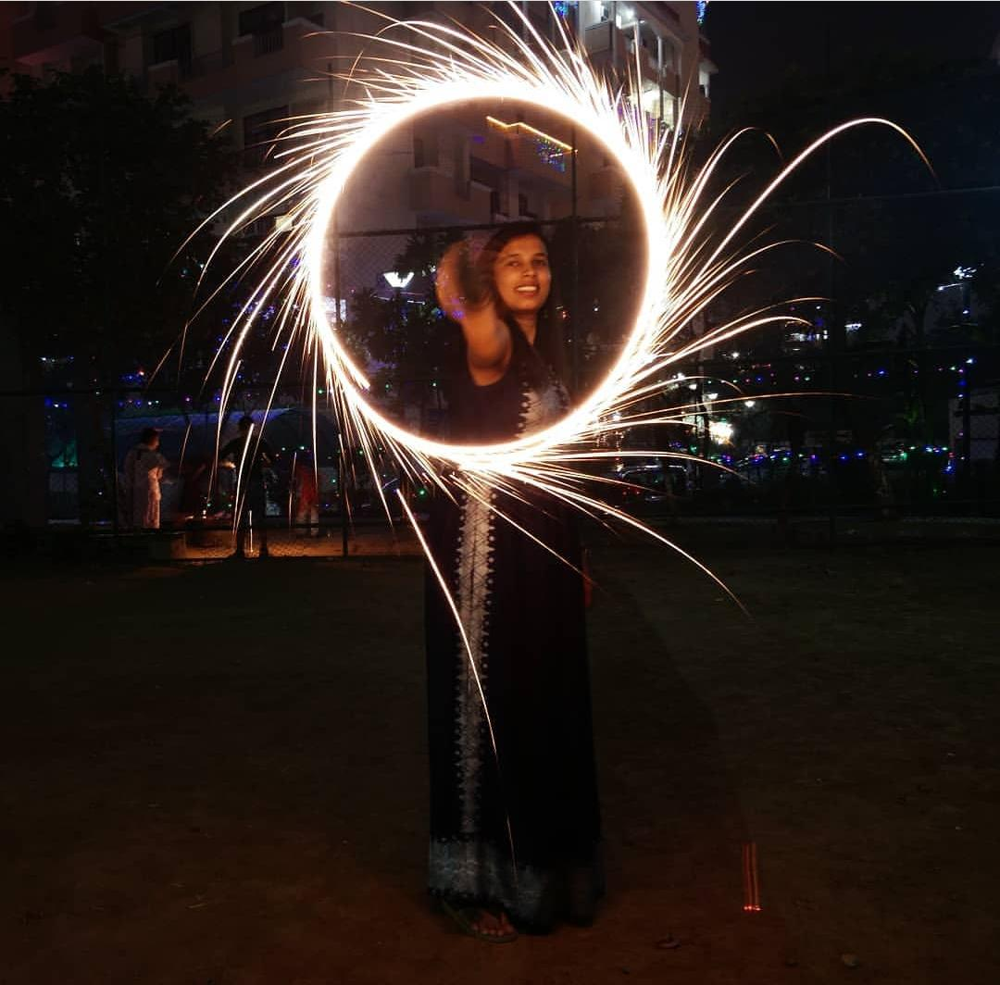

Read our blog
#1. A photography trick : Long Exposure
Long-exposure, time-exposure, or slow-shutter photography involves using a long-duration shutter speed to sharply capture the stationary elements of images while blurring, smearing, or obscuring the moving elements. Long-exposure photography captures one element that conventional photography does not: an extended period of time.

Whereas there is no fixed definition of what constitutes "long", the intent is to create a photo that somehow shows the effect of passing time, be it smoother waters or light trails. A 30-minute photo of a static object and surrounding cannot be distinguished from a short exposure, hence, the inclusion of motion is the main factor to add intrigue to long exposure photos. Images with exposure times of several minutes also tend to make moving people or dark objects disappear (because they are in any one spot for only a fraction of the exposure time), often adding a serene and otherworldly appearance to long exposure photos. When a scene includes both stationary and moving subjects (for example, a fixed street and moving cars or a camera within a car showing a fixed dashboard and moving scenery), a slow shutter speed can cause interesting effects, such as light trails. Long exposures are easiest to accomplish in low-light conditions but can be done in brighter light using neutral density filters or specially designed cameras. When using a dense neutral density filter your camera's auto focus will not be able to function. It is best to compose and focus without the filter. Then once you are happy with the composition, switch to manual focus and put the neutral density filter back on.
Long-exposure photography is often used in a night-time setting, where the lack of light forces longer exposures, if maximum quality is to be retained. Increasing ISO sensitivity allows for shorter exposures, but substantially decreases image quality through reduced dynamic range and higher noise. By leaving the camera's shutter open for an extended period of time, more light is absorbed, creating an exposure that captures the entire dynamic range of the digital camera sensor or film. If the camera is stationary for the entire period of time that the shutter is open, a very vibrant and clear photograph can be produced

Leave a comment